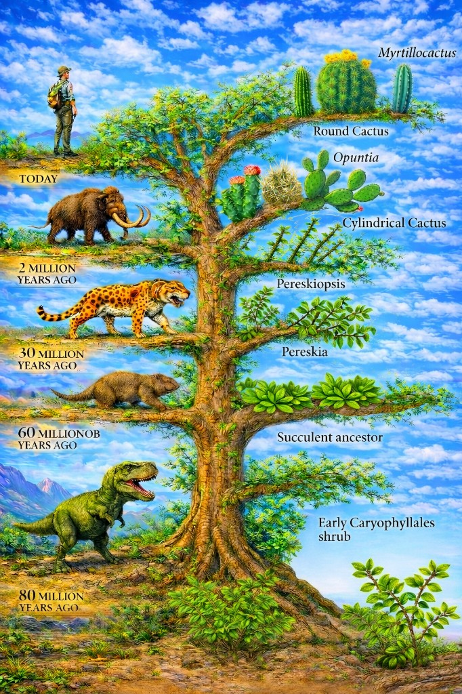

Эволюционное дерево кактусов

Когда кактусов ещё не было
Кактусы — растения удивительные, но при этом довольно молодые по меркам истории Земли.
Представьте себе, дорогой читатель, что у вас есть машина времени. И вы отправились назад — в эпоху динозавров. Устроились жить в далёком прошлом, построили домик и поставили на подоконник горшок для кактуса.
Но тут вас ждало бы разочарование.
Вместо колючего шара или стройной опунции в горшке рос бы обычный кустик с зелёными листьями. Никаких колючек, никаких мясистых стеблей. Потому что кактусов тогда ещё просто не существовало.
Мир динозавров
Около 80 миллионов лет назад, когда по Земле ходили динозавры, мир уже был богат жизнью.
В океанах плавали рыбы, по лесам ползали насекомые и пауки, в небе летали первые птицы. Но на месте будущих кактусов росли только их далёкие предки — обычные листовые растения.
Динозавры, какими бы огромными и грозными они ни были, никогда не видели кактусов.
После исчезновения динозавров
Когда динозавры исчезли, на Земле начали быстро распространяться млекопитающие.
Примерно 60 миллионов лет назад мир уже принадлежал зверям. Но и тогда настоящих кактусов ещё почти не было. Существовали лишь растения, которые постепенно приобретали признаки будущих суккулентов — способность запасать воду и утолщённые стебли.
Время саблезубых хищников
Перенесёмся ещё ближе к нашему времени — примерно 30 миллионов лет назад.
По земле уже бродили знаменитые саблезубые тигры — грозные хищники с огромными клыками. В это время предки кактусов уже начинали меняться. Появлялись растения вроде перескии — кустарники с листьями, но уже с колючками.
Это был важный этап эволюции: растение ещё выглядело как куст, но в нём уже рождался будущий кактус.
Эпоха мамонтов
А вот во времена мамонтов, примерно 2 миллиона лет назад, настоящие кактусы уже существовали.
К этому времени появились:
- шаровидные кактусы
- колонновидные гиганты
- опунции с плоскими сегментами
Мамонты могли проходить мимо этих колючих растений так же, как сегодня мимо них проходят люди.
Молодые, но невероятно успешные
Получается удивительная картина истории природы.
Рыбы появились на Земле сотни миллионов лет назад. Пауки и насекомые тоже очень древние. Птицы летали ещё во времена динозавров.
А кактусы появились значительно позже.
Но за сравнительно короткое время — всего за несколько десятков миллионов лет — они сумели превратиться из обычных листовых кустарников в одну из самых необычных и устойчивых групп растений на планете.
Сегодня известно более 1800 видов кактусов, и многие из них живут там, где другие растения просто не выдерживают условий.
И если внимательно посмотреть на колючий шар кактуса, можно увидеть в нём следы этой долгой истории: когда-то это был обычный зелёный куст, который миллионы лет учился выживать в мире солнца, камней и засухи.